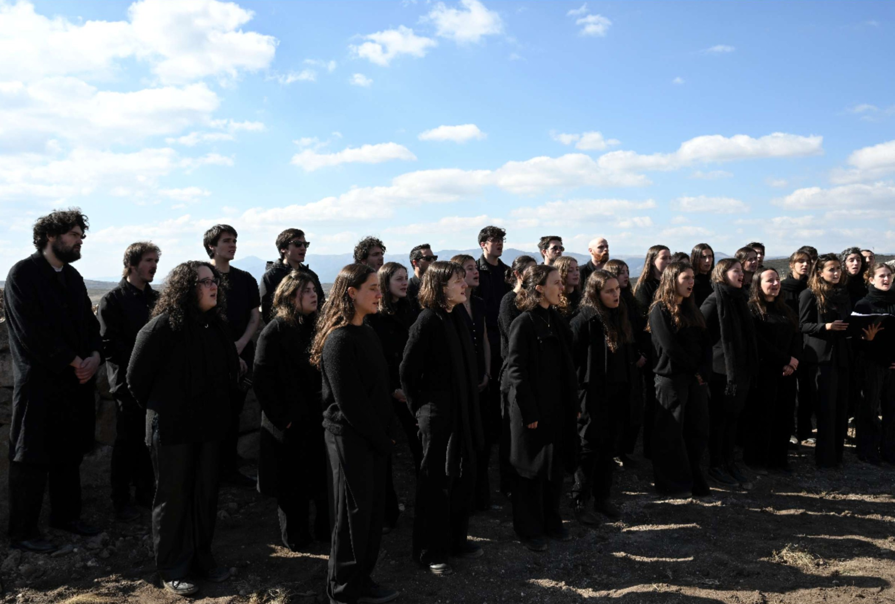
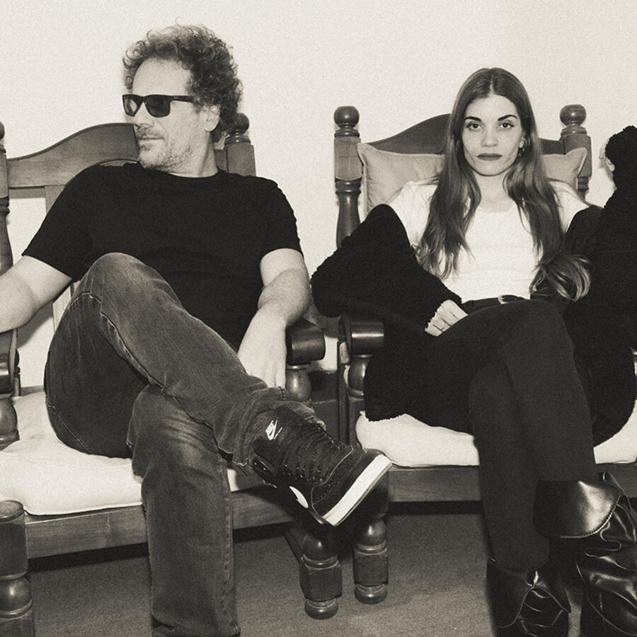
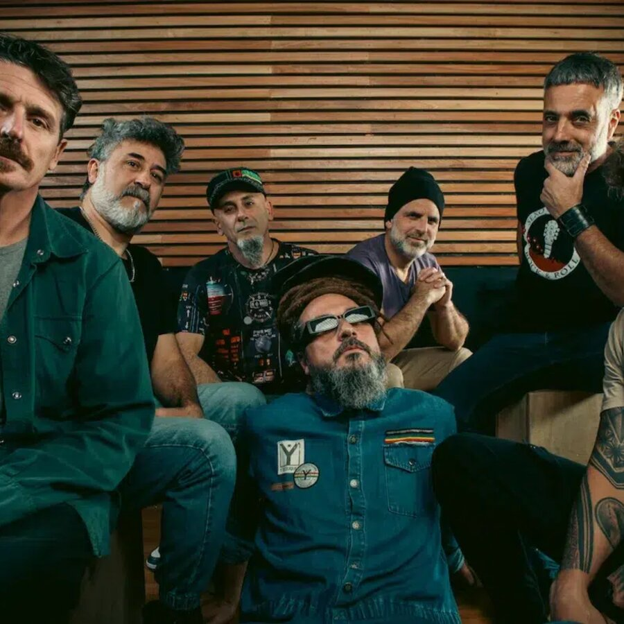
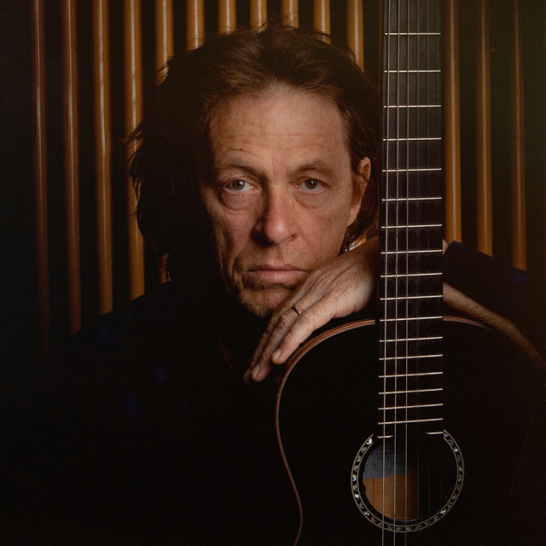

15 de agosto, 2026 · 13:30 h

El Coro Caledonia trae sus cuarenta voces bajo la dirección de Tommy Merello. Los Chelos del Fin del Mundo, guiados por Constancio Vergez, se suman para una sesión que cruza cuerdas y voz en el mismo espacio.
5 de septiembre, 2026

Cirilo Fernández, pianista y productor formado en Berklee, ganador del Premio Gardel a mejor álbum de jazz, se une a An Espil, una de las voces más versátiles de la escena independiente argentina, en un formato de piano y voz íntimo.
20 de noviembre, 2026

NonPalidece, una de las bandas de reggae más convocantes de la Argentina desde su formación en 1996, llega a Amelia para cerrar la temporada de primavera con un mensaje de siempre: amor, naturaleza y conciencia colectiva.
Febrero 2027

Dominic Miller, guitarrista de Sting por más de 30 años y coautor de "Shape of My Heart", vuelve a la Argentina - el país donde nació - junto a su cuarteto, para una sesión de guitarra íntima en Amelia.
¿Tenés una propuesta artística?